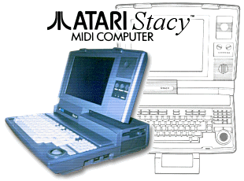
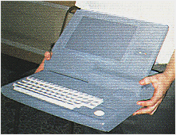
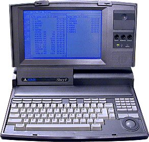
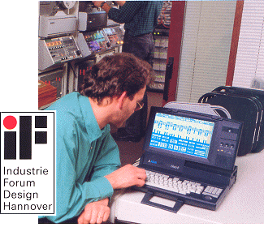

|

The Atari
"Transportable" or Stacy as it would be named,
was launched
in 1989. Atari had been talking about a portable ST since
1986, but it was fast tracked for launch when the ST became increasingly
more popular with musicians, and feedback was such that it was a viable
product to launch for this niche market alone.

In late 1988, the first mock-up units
(made from foam) were shown to industry insiders and privileged
journalists, the response was very positive. A truly global
project, design work was carried out in the Sunnyvale HQ, Cambridge UK,
and with final board layouts produced by Atari in Japan, which is where
the fist units were manufactured.

Released with 2 and 4MB versions with a 20
and 40MB hard drive, the unit retailed initially at over $2,299.00,
which was still cheaper than Apple's first portable at just under
$5,000.00! The Stacy used a backlit LCD display running the ST
high monochrome resolution. It came with all the specifications of
a standard desktop 1040ST in a luggable, but still transportable package.

The Stacy was another
superb design from Ira Velinsky and won him and Atari the 1990
"Industrie Forum" Design Award for Industrial Product Design in Germany.
The Stacy would be manufactured from 1989
until 1991, when the ST Book was planned as its lightweight, battery
saving alternative. Supplies of the Stacy were
often scarce, and it is unknown how many units were manufactured in
total. |